福祉用具のTAISコードを登録する
（ほのぼのNEXT・ケアマネ）
利用票に福祉用具を入れるとき、TAISコードの付いた商品を選ぶ手順です。新しく入れるとき・今ある行を直すとき・商品がまだ登録されていないときの3つに分けています。
はじめに
TAISコードとは、福祉用具の商品ごとに付いている番号です（車いす・手すりなどの「商品の背番号」）。形は 半角の 5けた-6けた（例：00122-000574）です。
2025年度（令和7年4月）から、サービス利用票（第6表）と利用票別表（第7表）に、福祉用具の品目名と TAISコードを印字します。利用票では、TAISコードの付いた商品 を選んでください。
福祉用具の事業所からもらった資料（商品名・TAISコード・型番・契約の単位数 がわかるもの）
どの作業ですか？
画像の 1 2 … と赤い枠は、その手順の説明の番号と同じです。画像を押すと大きく表示できます。
画像はソフトの会社（公式）の見本と、実際の画面です。商品名・番号は例なので、そのまま写さないでください。
作業
A利用票に新しく入れる約3分
登録されている商品を、TAISコードで探して選びます。商品を新しく作る必要はありません。
1［行追加］から始める
- 利用票を開き、利用者と月を確認します。
- 1 行追加 を押します。「サービス選択」の画面が出ます。
- 2 サービス種別の「介護」にチェックし、右の欄で「福祉用具貸与」を選びます（開いたときは「訪問介護」などになっているので変えます。予防の人は「予防」にチェックし、「予防用具貸与」）。
- 3 「事業所」の欄（初めは「（未選択）」）で、実際に貸し出す 福祉用具の事業所 を選びます。右側に 商品検索 と商品の一覧が出ます。
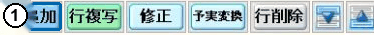
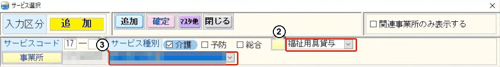
2TAISコードで商品を探して選ぶ
- 1 右側の「TAISコード等」の欄に、資料のコードを入れます（商品名でも探せます）。
- 2 商品検索 を押します。
- 3 コードが入っている商品の行をクリックします。
- 4 下の 商品名・コード・単位数 が、資料と同じか確認します。
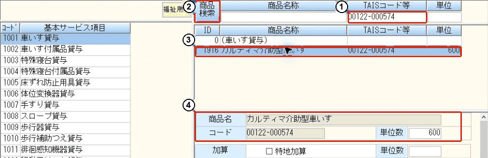
- 「（車いす貸与）」のような コードのない行は選ばない でください。
- 見つからないときは、事業所・種類・入れたコードをもう一度確認します。それでも出ないときは 作業 C（登録担当者に相談）です。
3［追加］→［閉じる］→ 利用票を［保存］
- 1 追加 を押します。ほかの商品も入れるときは、手順 2 をくり返します。
- 2 最後に 閉じる を押します。
- 利用票に正しい商品が出ているか確認し、利用する日・回数を入れます。
- 3 事業所・商品・単位数・予定を確認して、利用票の 保存 を押します。
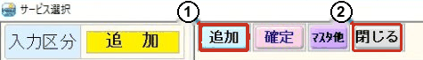
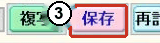
商品を選んだだけでは登録されません。追加 まで押してください。
作業
B今ある行の商品を直す約3分
正しい商品が登録されていれば、行を増やさずに［修正］で選び直します。商品が登録されていないときは、先に 作業 C です。
1直したい行を選んで［修正］
- 利用者・月を確認し、今の商品・単位数・日付と回数をメモしておきます。
- 1 直したい福祉用具の行を選び、修正 を押します。
- 2 開いた画面の 入力区分 が「修正」になっているか確認します。
- 3 福祉用具の事業所が正しいか確認します。
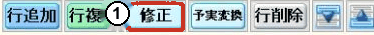
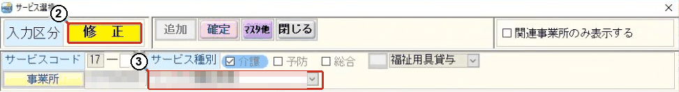
そこで止めます。完了のチェックを自分で外さず、担当者に確認してください。
2TAISコードで探して選び直す
- 1 「TAISコード等」の欄に、資料のコードを入れます。
- 2 商品検索 を押します。
- 3 正しい商品の行をクリックします。
- 4 下の商品名とコードが変わったことを確認します。単位数 も資料と同じか確認します。
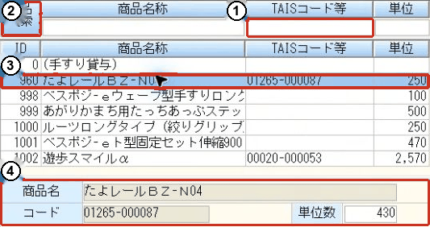
前の単位数が残ることがあります。資料と合わないときは確定せずに、担当者に確認します。
3［確定］→［閉じる］→ 利用票を［保存］
- 1 商品名・TAISコード・単位数が正しければ 確定 を押します（修正のときは 追加 は灰色で使えません）。
- 2 画面が残っていたら 閉じる を押します。
- 利用票で、直した行の商品・単位数・日付・回数を確認します。同じ行が増えていないかも見ます。
- 3 利用票の 保存 を押します。
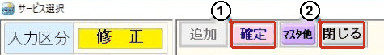
新しく入れる＝追加、今ある行を直す＝修正 → 確定。やめるときは確定せずに 閉じる。
作業
C商品をマスタに登録する（登録担当者）約5分
作業 A・B で探しても商品が出てこないときだけ行います。事業所の登録担当者 が行ってください。
- 商品の一覧（福祉用具マスタ）は、みんなで使う共有の一覧です。同じ商品を2つ登録しない よう、コードの空いた行なども含めて、本当にないか確認します。
- 商品名は手で入力しません。元の一覧から取り込みます。
2事業者を確認して［取込］→［読込］
- 1 上の 事業者 が、貸し出す福祉用具の事業所か確認します。
- 2 取込 を押します。
- 3 開いた画面の 読込 を押します。
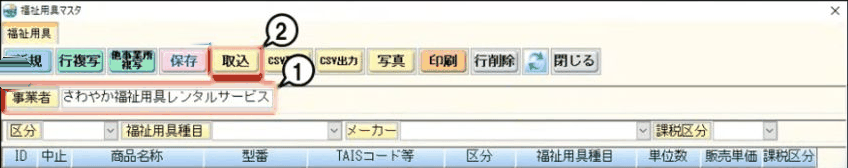
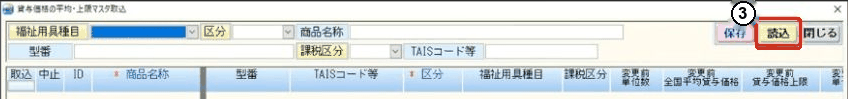
CSV取込・CSV読込 は使いません。介護と予防の両方で使う商品は、それぞれの事業所で登録があるか確認します。
3元の一覧で商品を探して［追加］
- 上の欄で、TAISコード・商品名・型番を入れて探します。開始日（有効な期間）も確認します。
- 1 資料と TAISコード・型番・商品が同じ行の 「読込」 にチェックします。
- 2 追加 を押し、確認の画面で内容を見て はい。
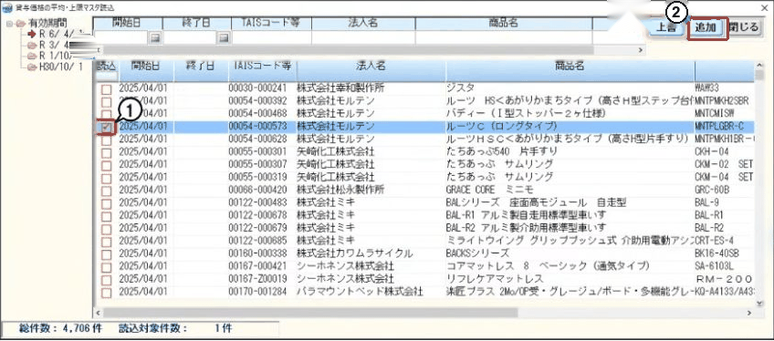
押すのは 追加 です（上書 ではありません）。同じ商品がないときは、似た商品を選ばずに確認します。
4種目と単位数を入れて［保存］→［閉じる］
- 1 「ID」の見出しを押して、追加した商品が見えるようにします。
- 下の横スクロールを右へ動かします。
- 3 福祉用具種目（手すり・車いす など）を選びます。
- 4 変更後単位数 に、事業所に確認した単位数を入れます。
- 5 商品と単位数を確認して 保存、6 閉じる。
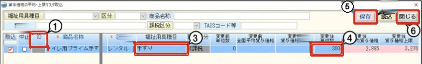
追加した直後は、種目が空・単位数が 0 です。全国平均貸与価格・上限価格を単位数として写さない でください。
5マスタで、追加した商品を確認する
- 1 福祉用具マスタに戻ったら 「ID」の見出しを押し、大きい番号が上に来るようにします（小さい順なら、もう一度押す）。
- 2 上のほうにある追加した商品を選び、TAISコード・型番・種目・単位数を資料と見くらべます。
- 閉じる でサービス選択に戻り、作業 A の手順 2 の方法で商品を探して選びます。
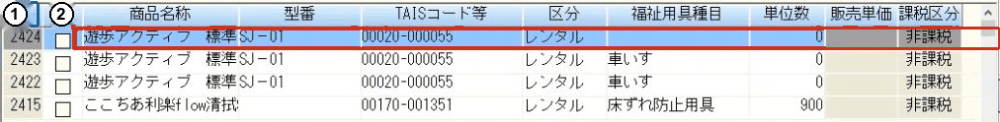
一番上だからといって選ばず、必ずコードで確認します（ほかの人が同じころに登録していることがあります）。商品が出なくても、もう一度追加せず、事業所と種目を確認します。
参考3つのマスタのちがい
操作には必要ありません。しくみを知りたいときに読んでください。
- 貸与価格の平均・上限マスタ元の商品情報。商品名・型番・TAISコード・平均価格・上限価格が入っています。
- 貸与価格の平均・上限マスタ取込元の一覧から商品を選んで追加し、内容を確認して保存する画面（作業 C で使う）。
- 福祉用具マスタ保存した商品・種目・単位数を、利用票で使います。事業所ごとに別です。
- 取込：元の一覧から商品を選んで、新しく追加する（平均価格・上限価格の更新にも使う）。
- CSV読込：国が公表した価格のファイルを読んで、価格を更新する。新しい商品の追加はできません。
困ったとき
- 商品が見つからない：事業所・サービスの種類（福祉用具貸与／予防用具貸与）・入れたコードを確認します。それでも出なければ、事業所の登録担当者に相談します（作業 C）。
- TAISコードがわからない：福祉用具の事業所に聞きます。テクノエイド協会のホームページでも調べられます：福祉用具の全国平均貸与価格・上限（テクノエイド協会）
- 印字を確かめたい：利用票の印刷プレビューで、第6表・第7表に品目名と TAISコードが出ているか見ます。
- 提供票のデータを送っている：直したあと、その利用票をもう一度 CSV出力します（ケアプランデータ連携 No.07 の作業①）。
- 商品名を直したのに、印字の名前が変わらない：帳票の用具名称は、TAISコードをもとに「貸与価格の平均・上限マスタ」の名前を使うことがあります。
商品の登録：事業所の登録担当者
操作でわからないこと：総務部 担当：菊竹
電話：090-8490-7356
参考：NDソフトウェア公式サポートQ&A（記事ID 4680・8420・7802・2421・1867）、基本マニュアル「利用票・提供票作成編（居宅）」。画面は公式の見本と実機の検索画面です（2026年11月7日確認）。